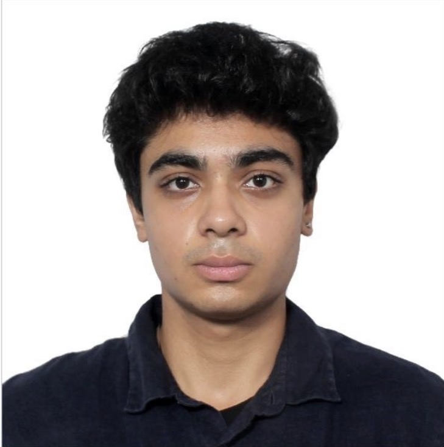

Indian Institute of Management Bangalore
BBA in Digital Business and Entrepreneurship (DBE)
Learning business fundamentals and digital entrepreneurship.
HELLO, I'M
Student. Aspiring entrepreneur. Badminton player.
I'm interested in building businesses, learning how they grow and carrying forward the entrepreneurial spirit of my family.
Explore my resume
01 / INTRODUCTION
I'm a student of Digital Business and Entrepreneurship at IIM Bangalore, alongside pursuing a BBA in Entrepreneurship and Family Business at NMIMS, Mumbai. I enjoy understanding how businesses work in real life, especially the decisions involved in growing and managing a family enterprise.
My goal is to build the knowledge and practical experience to contribute to and eventually help expand our family business.
02 / ACADEMICS
BBA in Digital Business and Entrepreneurship (DBE)
Learning business fundamentals and digital entrepreneurship.
BBA — Entrepreneurship and Family Business
Exploring management, entrepreneurship and family enterprises.
Class XII — HSC
Completed higher secondary education.
03 / INDUSTRY EXPOSURE
Commercial and industrial refrigeration & HVAC
Our family business supplies refrigeration and HVAC components and supports customers with product and application knowledge. Being around the business has made me curious about distribution, customer relationships and how technical businesses grow.
This is family business exposure, not a claim of formal employment.
04 / MY WORK
Built this resume using semantic HTML and styled it with CSS to make the information easy to read on both desktop and mobile.
Tools: HTML5, CSS3, GitHub Pages (after deployment)
Explored how a refrigeration and HVAC distribution business can connect its operations with sustainability and stakeholder considerations.
Tools: Business research, presentation and report writing
05 / BEYOND CLASSROOMS
Outside academics: badminton, tennis, fitness and learning about entrepreneurship.
06 / WHAT I'M LEARNING
| Area | Focus |
|---|---|
| Web development | HTML, CSS, responsive page design |
| Business | Entrepreneurship, family business and strategy |
| Communication | Presentations and teamwork |
| Sports | Competitive badminton and fitness |
07 / CONNECT
I'm based in Mumbai, India, and always interested in learning about business, entrepreneurship and new opportunities.
Email: dheer.varma26@iimb.ac.in
Back to top ↑